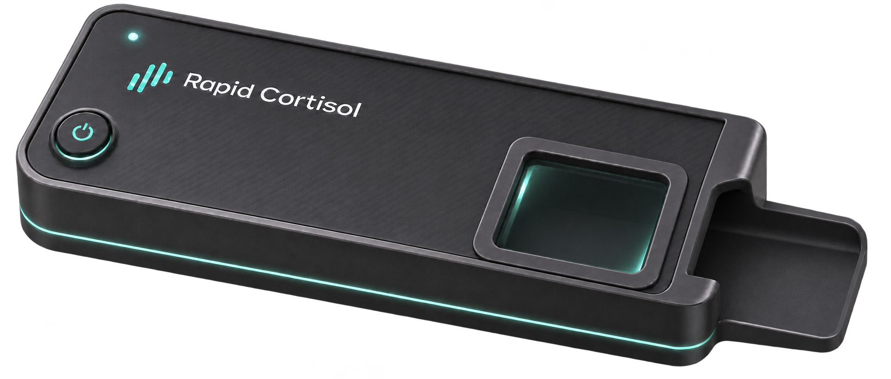
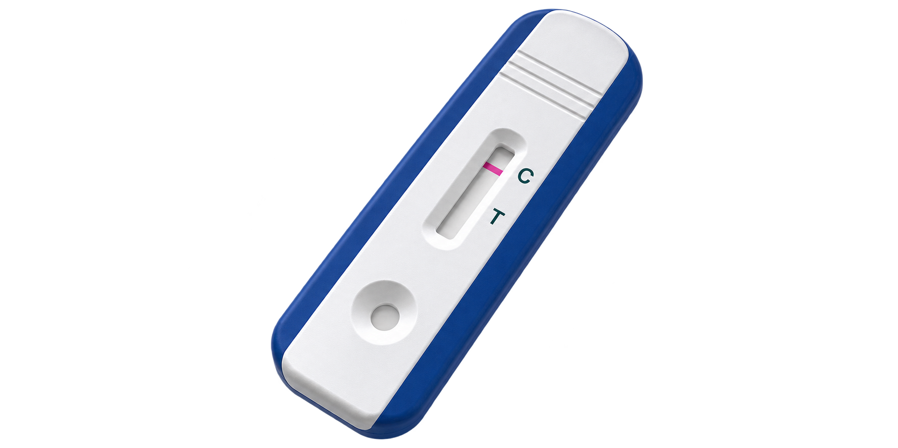
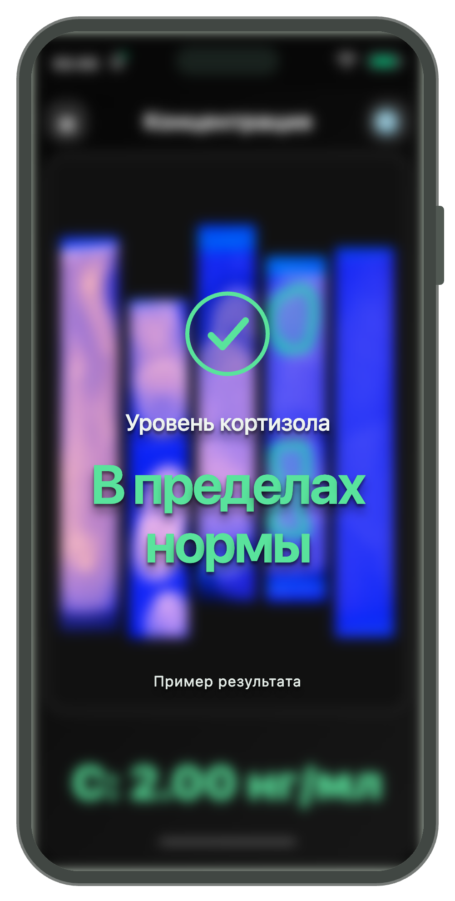

Кортизол в слюне.
Тест. Снимок.
Результат.
Тест-полоска, адаптер и приложение. Создаём удобную систему определения кортизола в слюне.
Rapid Cortisol создаётся в ООО «Ви-АнХим».
Образец слюны. Тест-кассета. Цифровое считывание.
КОМПОНЕНТЫ RAPID CORTISOL



01 / О ПРОДУКТЕ
Анализ слюны.
Считывание смартфоном.
Мы создаём тест Rapid Cortisol для определения кортизола в слюне с помощью смартфона.
В систему входят тест-полоска, компактный адаптер и приложение. Мы стремимся сделать измерение простым и удобным.
Мы продолжаем проверять характеристики системы. Результат теста не заменяет медицинское заключение.
- Без забора крови
- Компактный набор
- Результат в приложении
02 / КАК ЭТО РАБОТАЕТ
От образца к результату.
Так мы видим работу готовой системы.
- 01
Нанесите образец
Добавьте образец слюны на тест-полоску.
- 02
Сделайте снимок
Поместите тест в адаптер и сфотографируйте смартфоном.
- 03
Посмотрите результат
Откройте изображение в приложении для анализа.
03 / ПРИЛОЖЕНИЕ
Снимок теста.
Результат на экране.
Загрузите изображение, выделите область теста и посмотрите экспериментальный расчёт.
Открыть приложение ↗Приложение проходит доработку и не предназначено для самостоятельной диагностики.
- 1
Загрузите снимок
Из галереи или с камеры.
- 2
Выделите область
Укажите участок теста для анализа.
- 3
Посмотрите расчёт
Результат появится на экране.
04 / ПОДДЕРЖКА ПРОЕКТА
При поддержке
партнёров.
Проект реализован при поддержке Фонда содействия инновациям в рамках программы «Студенческий стартап» мероприятия «Платформа университетского технологического предпринимательства» федерального проекта «Технологии».
05 / КОНТАКТЫ
Давайте развивать
технологию вместе.
Обсудим исследования, партнёрство и развитие Rapid Cortisol.
Телефон+7 923 005-80-73
Генеральный директор ООО «Ви-АнХим» Аромбаева Виктория Владимировна.